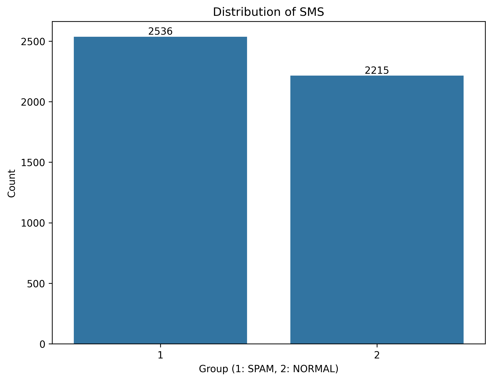
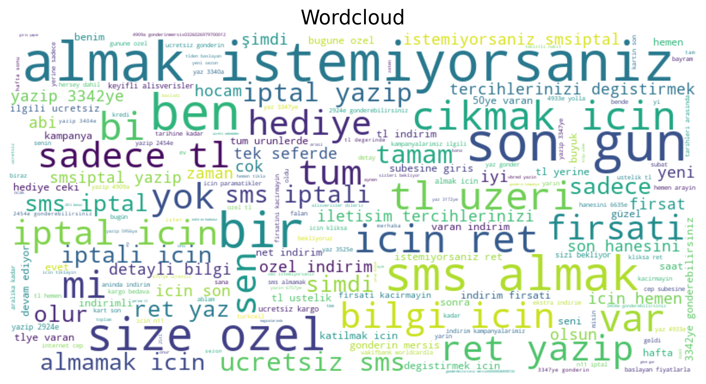

Step 1: Analyze the dataset. 4751 SMS with 2536 phishing, 2215 normal.

Step 2: Clean text. Get rid of the punctuation, multiple spaces, make all letters lower case.
Step 3: Draw word cloud

Step 4: Split data for training (80%) and test (20%)
Step 5: Feature extraction (tf-idf) tf (# of times word w appears in document d / # of words in document d) idf log(total documents / # of documents containing(word)) TfidVectorizer is used to transform SMS into numerical feature vectors.
doc1 = "a a b c"
doc2 = "a c c c d e f"
doc3 = "a c d d d"
doc4 = "a d f"